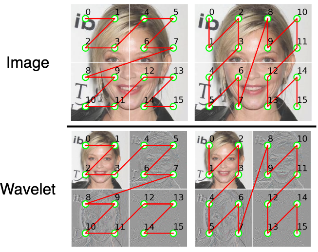

Highlight
We introduce DiMSUM, a novel Mamba architecture, synergistically combining spatial and wavelet information to achieve effective and high-quality image synthesis. Our method further leverages a hybrid mamba-attention design by integrating a globally-shared transformer block. This enriches global-context capture, addressing the bottlenecks of traditional Mamba.
Through extensive experiments on standard benchmarks, our method achieves state-of-the-art results, with a FID of 4.62 on CelebHQ 256, 3.76 on LSUN Church, and 2.11 on ImageNet1k 256. Additionally, our approach attains faster training convergence compared to Zigma and other diffusion methods. In detail, our method outperforms both DiT and SiT while requiring less than a third of the training iterations, achieving the best FID score of 2.11.
Why is scanning in frequency space helpful?

Previous state-space models, particularly in processing visual data, failed to effectively address the design choice of scanning order due to their exclusive reliance on spatial processing, neglecting crucial long-range relations in the frequency spectrum. We propose a novel approach that integrates frequency scanning with the conventional spatial scanning mechanism.
DiMSUM addresses these challenges by decomposing the original image into frequency wavelet subbands, effectively capturing long-range frequencies while preserving relationships across subbands. We redesigned the window scanning so that each window corresponds to a frequency subband in the figure above, enabling the capture of the full range of low- and high-frequency signals from the original image. This advantage sets us apart from the window scanning in image space. As the model progresses through subbands, it incorporates spatial information across various frequencies, enhancing the denoising process.
Results
BibTeX
@inproceedings{phung2024dimsum,
title={DiMSUM: Diffusion Mamba - A Scalable and Unified Spatial-Frequency Method for Image Generation},
author={Hao Phung, Quan Dao, Trung Dao, Hoang Phan, Dimitris Metaxas, Anh Tran},
booktitle={The Thirty-eighth Annual Conference on Neural Information Processing Systems},
year= {2024},
}